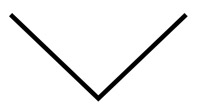

Deportes
Las de Navidad son fiestas de excesos que la práctica deportiva puede ayudar a equilibrar. Nadando a brazo partido en aguas abiertas, rizando el patín sobre el hielo o gastando zapatillas deportivas por San Silvestre conforman maneras muy variadas de superar con nota las largas sobremesas.

En forma
Una pista de hielo ideal para disfrutar patinando con los más pequeños de la familia. En Sant Fruitós de Bages, un pueblo de origen medieval que en la actualidad consolida su expansión demográfica gracias a la llegada de familias jóvenes que se instalan en los pisos y viviendas unifamiliares que se construyen.

La Sansi es la tercera carrera de Fin de Año con más participantes de Catalunya. Empieza a las 10,30 h en un circuito de 5 km y acepta hasta 1.800 inscritos. La carrera infantil empezará a las 11,15 h. Este año La Sansi no distinguirá entre hombres y mujeres. Todas las personas correrán juntas.
Travesía de natación de 1.500 m en la playa del Varador de Mataró que se organiza desde el año 2012. Se necesita inscripción previa y cuesta entre 25 y 27€ por inscrito. En el evento colabora el Centre Natació Mataró.

El 29 de diciembre los badaloneses y badalonesas participarán masivamente, como ocurre siempre, en esta carrera de 10K o 5K con la que despedirán el año. El circuito discurre por el centro de la ciudad. La organización admite corredores disfrazados y organiza un concurso individual o en comparsa.

Calella celebra el día de Navidad la tradicional 'banyada' colectiva, una iniciativa con 27 años de historia. La Colla No Tinc Fred seguirá reuniendo a las personas más valientes del municipio, dispuestas a repetir una gran experiencia deportiva y cívica.